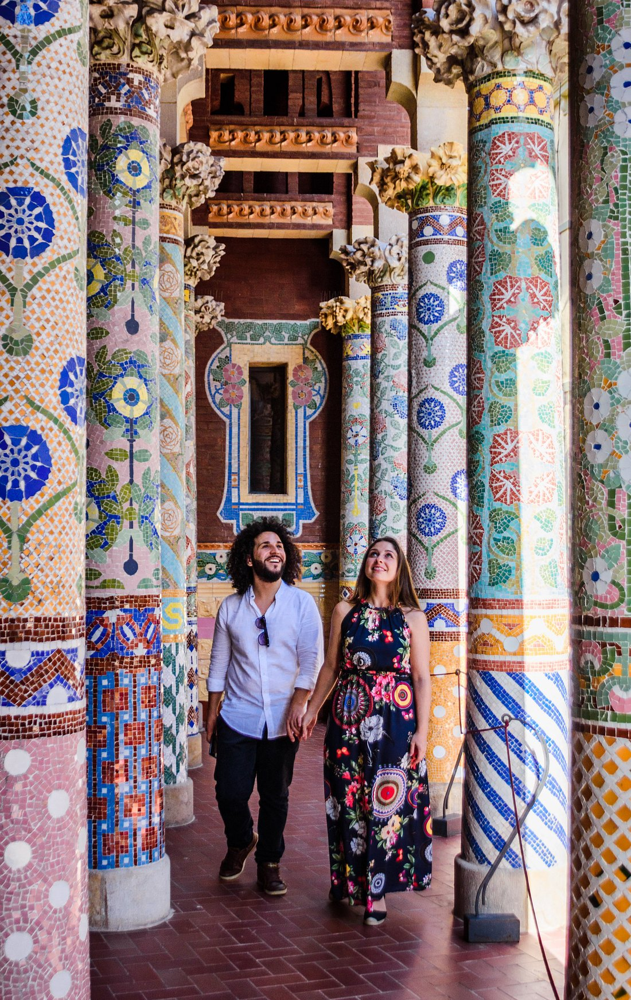

Barcelona
Index
 Barcelona is a city on the coast of northeastern Spain,
located 150 km south of the French border. It is the capital and largest city of
the autonomous community of Catalonia, as well as the second most populous
municipality of Spain. With a population of 1.6 million within city limits, its
urban area extends to numerous neighbouring municipalities within the Province
of Barcelona and is home to around 4.8 million people.
Barcelona is a city on the coast of northeastern Spain,
located 150 km south of the French border. It is the capital and largest city of
the autonomous community of Catalonia, as well as the second most populous
municipality of Spain. With a population of 1.6 million within city limits, its
urban area extends to numerous neighbouring municipalities within the Province
of Barcelona and is home to around 4.8 million people.
Barcelona is one of the largest metropolises on the
Mediterranean Sea, located on the coast between the mouths of the rivers
Llobregat and Besòs, and bounded to the west by the Serra de Collserola mountain
range, the tallest peak of which is 512 metres high.
Public transportation is provided by buses, subways, and
surface railways. There are also cable cars. Freeways link Barcelona to the
Catalonia highway network. The metropolitan subway, opened in 1924, connects
with the urban railway and provides regular service to some municipalities in
the metropolitan region and to the international airport at Prat de Llobregat,
about 13 km southwest of the city.
Bus operated by TMB (Barcelona Metropolitan Transport)
Barcelona is a transport hub, with the Port of Barcelona
being one of Europe's principal seaports and busiest European passenger port, an
international airport, Barcelona–El Prat Airport, which handles over 50 million
passengers per year, an extensive motorway network, and a high-speed rail line
with a link to France and the rest of Europe.
Here there's a table with some of the top 10 tourist attractions for being
visited by tourists in Barcelona (according to TripAdvisor). Click the
pictures for accessing to the official websites (if there's any).
| Name |
Tourist attractions in Barcelona
|
| Picture |
About |
Suggested duration |
Opening hours |
| Basílica de la Sagrada Familia |
|
The Basilica of the Sagrada Familia is a monumental church devoted
to the Holy Family: Jesus, Mary and Joseph. Construction began in 1882,
based on plans drawn up by the architect Francisco de Paula del Villar,
and Antoni Gaudi was commissioned to continue the project in 1883. The
Temple has always been an expiatory church, built only from donations.
As Gaudi said: "The Expiatory Church of the Sagrada Familia is made by
the people and is mirrored in them. It is a work that is in the hands of
God and the will of the people." In 2010, Pope Benedict XVI consecrated
the site as a minor basilica |
2-3 hours |
Mon - Sat 08:00 - 18:00 |
| Gothic Quarter (Barri Gotic) |
|
The Central historical part of Barcelona, located between the
streets of Rambla and Laetana. |
2-3 hours |
Always open |
| Casa Batllo |
 |
Casa Batlló is a building in the center of Barcelona. It was
designed by Antoni Gaudí, and is considered one of his masterpieces. |
1-2 hours |
Mon - Thu 09:00 - 20:15 Fri - Sun 08:30 - 20:15 |
| Palace of Catalan Music (Palau de la Música) |
 |
The Palau, an icon of modernist architecture in
downtown Barcelona The Palau de la Música Catalana is one of the most
representative monuments of the city and It is one of the most
recommended tourist attractions of Barcelona. Built between 1905 and
1908 by the great architect Lluis Domènech i Montaner, the Palau de la
Música Catalana is an architectural jewel of Catalonia and essential
part of any visit to the city, as any of the most fascinating Gaudi
buildings. |
< 1 hour |
Sun - Sat 09:00 - 15:30 |
| Mercat de la Boqueria |
|
This popular food market sells some of the
freshest fruit, vegetables and seafood in Barcelona. |
1-2 hours |
N/A |
Futbol Club Barcelona, commonly referred to as Barcelona and colloquially
known as Barça, is a professional football club based in Barcelona, Catalonia,
Spain, that competes in La
Liga, the top flight of Spanish football.
The official stadium is Camp Nou located in Barcelona city. With a current
seating capacity of 99,354 people, it is the largest stadium in
Spain and Europe, and the fourth largest association football stadium in the
world.
Camp Nou
Access to the oficial website
here.
Although Barcelona is sometimes windy, its protective semicircle of mountains
shields it from the harsh, cold winds that blow out of the north and west. The
average annual temperature is 16 °C; January is the coldest month, averaging 9
°C, and August is the hottest, at 24 °C. Precipitation amounts to about 600 mm
per year.
You can find the weather forecast in the
BBC Weather
Website.
The 10 best things to do in
Barcelona - November 2022 (with photos) (no date) Tripadvisor.
Available at:
https://www.tripadvisor.ie/Attractions-g187497-Activities-Barcelona_Catalonia.html
(Accessed: November 15, 2022).
20 top-rated tourist
attractions in Barcelona: Planetware (no date) PlanetWare.com.
Available at:
https://www.planetware.com/tourist-attractions-/barcelona-e-cat-bar.htm
(Accessed: November 15, 2022).
Askham, G. (2021) 23 best
things to do in Barcelona, Condé Nast Traveler. Condé Nast Traveler.
Available at:
https://www.cntraveler.com/gallery/best-things-to-do-in-barcelona (Accessed:
November 15, 2022).
Barcelona (2022)
Wikipedia. Wikimedia Foundation. Available at:
https://en.wikipedia.org/wiki/Barcelona (Accessed: November 15, 2022).
The Barcelona website:
Barcelona City Council (2022) Barcelona website. Available at:
https://www.barcelona.cat/en/ (Accessed: November 15, 2022).
Barcelona, what to see and do
(no date) Spain.info. Available at:
https://www.spain.info/en/destination/barcelona/ (Accessed: November 15,
2022).
History of Barcelona (no
date) Encyclopædia Britannica. Encyclopædia Britannica, inc. Available
at:
https://www.britannica.com/place/Barcelona/History (Accessed: November 15,
2022).
Imgur (no date) Imgur.com,
Imgur. Available at:
https://imgur.com/zOOIyrX (Accessed: November 15, 2022).
Lonely Planet (no date) Must
see attractions barcelona, Spain, Lonely Planet. Available at:
https://www.lonelyplanet.com/spain/barcelona/attractions
(Accessed: November 15, 2022).
smiling face with smiling
eyes emoji (no date) Emojipedia. Available at:
https://emojipedia.org/smiling-face-with-smiling-eyes/ (Accessed: November
15, 2022).
Contact
If you have any query don't hesitate to contact me directly by
email or by
filling the following form.
Note: When you finish this form, the page will redirect you to your main
email app for sending an email to the creator with the information provided in
the form.